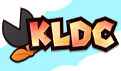
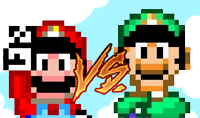

VLDC
El VLDC es el "Vanilla Level Desing Contest" o mejor dicho el "Concurso de Niveles Vanilla"
El mismo se trata de crear tu propio nivel al mejor estilo SMW sin utilizar recursos aparte de los que vienen en el juego original
KLDC
El KLDC es el "Kaizo Level Desing Contest" o mejor dicho el "Concurso de Niveles Kaizo"
El mismo se trata de crear tu propio nivel al mejor estilo SMW utilizando todos los recursos necesarios para crear un kaizo para no olvidar
¿Mario o Luigi?
¿Quien sera nuestro personaje principal?
Todos amamos a Mario, pero Luigi tiene un papel muy importante en la saga y ademas es un personaje muy divertido con todos sus sonidos y frases
Animaciones FG
Las animaciones son una parte impresindible para que nuestro FG se vea estetico
Se necesitan herramientas complementarias como YYCHR para poder llevar a cabo nuestra idea. Pero nada que en esta publicacion no vayas a aprender
¿Kaizo o Standard?
¿Cual elijo para crear?
La mejor manera de saber cual elegir es jugando ambos conceptos e ir por aquel que te haga sentir bien a la hora de jugar , ya que si no disfrutas el gameplay el diseño de nivel se va a complicar
Base-Roms
¿Que es un Base-Rom
Los Base-Roms son sistemas pre-armados en los cuales econtraremos todo lo necesario para crear. La mayor diferencia que hay es que el Base-Rom al ya estar hecho tiene ciertas reglas a seguir para usarlo.